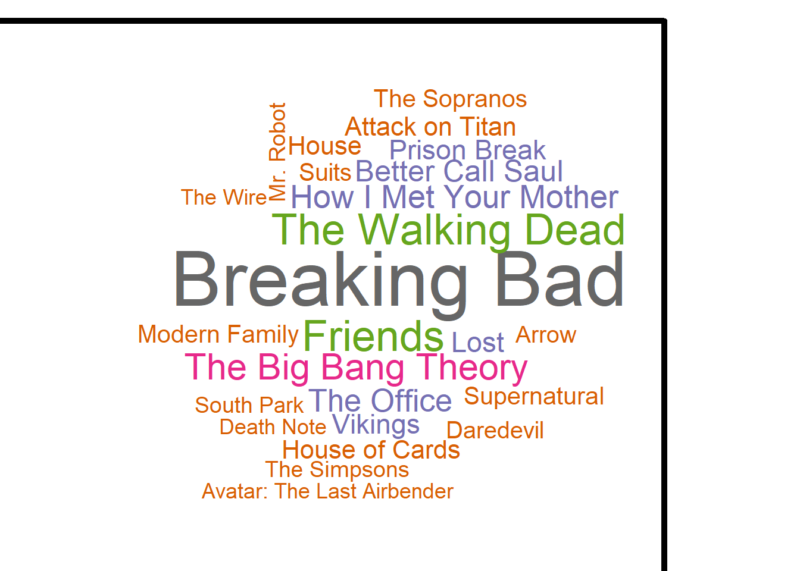
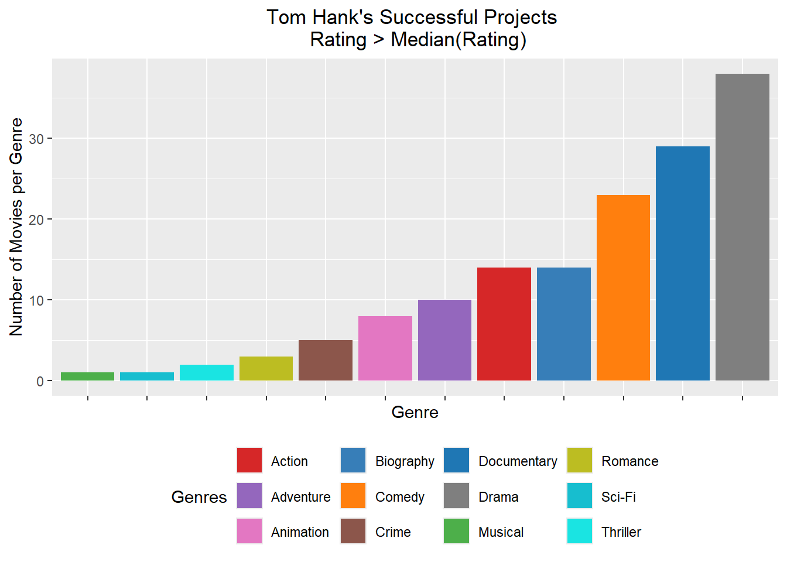
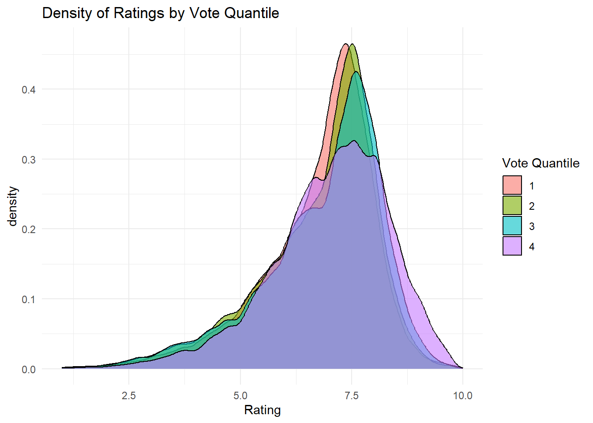
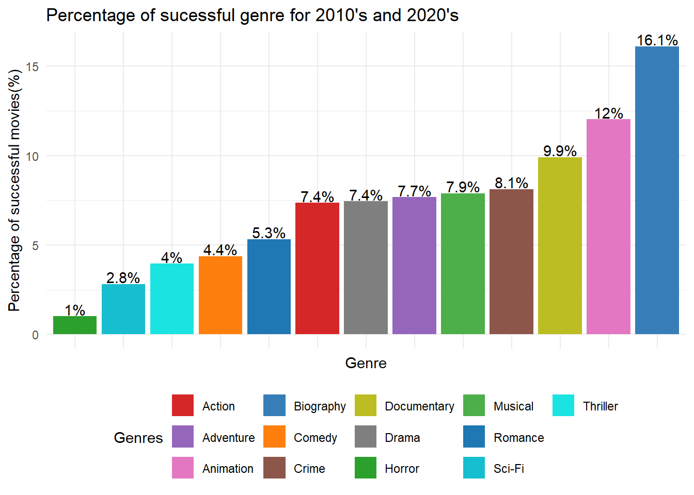
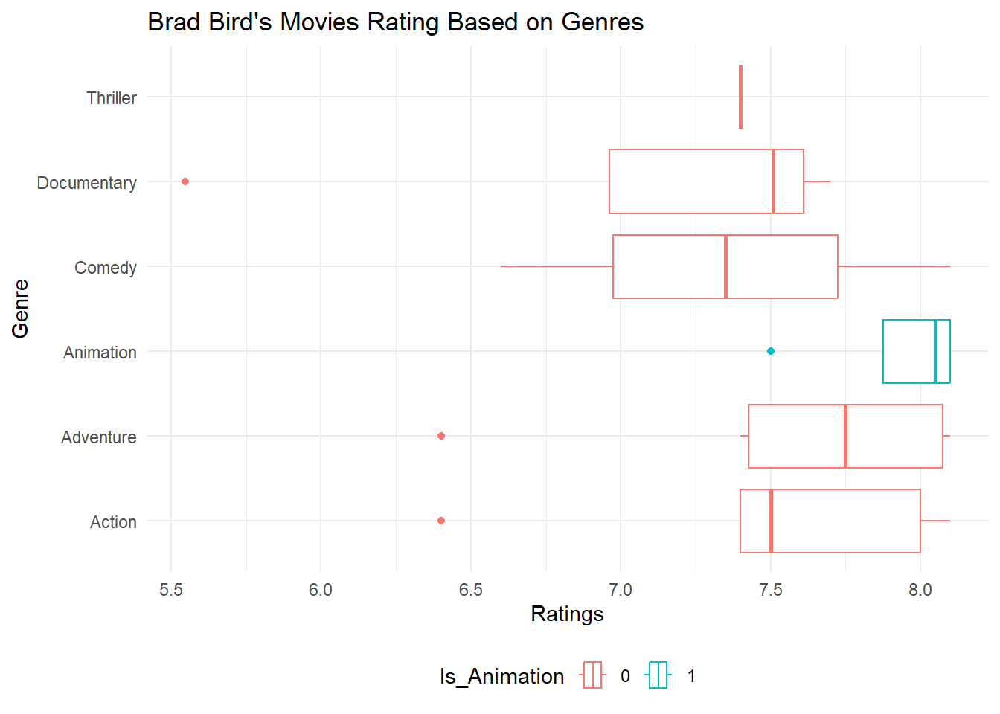

Code
if(!require("ggplot2")) install.packages("ggplot2")
if (!require("tidyverse")) install.packages("tidyverse")
if (!require("DT")) install.packages("DT")
library(tidyverse)
library(DT)
library(ggplot2)I believe everyone enjoys a good movie, though what defines a “good film” can vary from person to person—a debate in itself. In this project, I aim to conduct an exploratory data analysis using the the IMDb non-commercial release to uncover insights into movie popularity, ratings, and trends in genre popularity across decades. Ultimately, my goal is to propose a movie remake based on these findings.
As part of this project, I’ll take on the role of a Hollywood development executive. Traditionally, these executives would acquire life rights for “based on a true story” films, secure options for promising novels, or adapt existing intellectual property (IP). However, in recent years, this process has been criticized for relying too heavily on sequels and reboots. To break away from that pattern, I will use data-driven insights to identify what makes a film successful, analyze the key players in filmmaking, and examine notable Hollywood flops. By understanding these patterns, I’ll aim to propose fresh, innovative movie ideas that resonate with today’s audience.
The following packages are used for this analysis: dplyr, tidyr, DT, ggplot2 and tidyverse,gganimate , scales. If these packages have not been installed in the system, they can be with the following code:
To begin, we load the necessary R libraries, primarily using the tidyverse package for data wrangling and DT for data visualization.
if(!require("ggplot2")) install.packages("ggplot2")
if (!require("tidyverse")) install.packages("tidyverse")
if (!require("DT")) install.packages("DT")
library(tidyverse)
library(DT)
library(ggplot2)#I have also created a function for interactive table creation
table_creation<-function(x){
datatable(x,
options = list(
searching = FALSE, # Removes the search bar
pageLength = 10, # Optional: Set the number of rows displayed per page
lengthChange = FALSE,# Removes the option to change the number of rows displayed
dom = 't'
),
filter = 'none'
)
}Using the get_imdb_filefunction we are loading all the required DATASETS
#|eval: false
#|label: 'get_imdb_file function'
#|code-fold: true
get_imdb_file <- function(fname){
BASE_URL <- "https://datasets.imdbws.com/"
fname_ext <- paste0(fname, ".tsv.gz")
if(!file.exists(fname_ext)){
FILE_URL <- paste0(BASE_URL, fname_ext)
download.file(FILE_URL,
destfile = fname_ext)
}
as.data.frame(readr::read_tsv(fname_ext, lazy=FALSE))
}#|eval: false
#|code-fold: true
TITLE_BASICS<- get_imdb_file("title.basics")
TITLE_PRINCIPALS <- get_imdb_file("title.principals")
TITLE_EPISODES <- get_imdb_file("title.episode")
NAME_BASICS <- get_imdb_file("name.basics")
TITLE_RATINGS <- get_imdb_file("title.ratings")
TITLE_CREW <- get_imdb_file("title.crew")The NAME_BASICS dataset is filtered to only include rows where the knownForTitles column contains more than one title (indicated by the presence of more than one comma). This step ensures that only individuals known for multiple works are retained.
Similarly, TITLE_RATINGS are filtered with numVotes>100.
#|eval: false
#|code-fold: true
NAME_BASICS <- NAME_BASICS |>
filter(str_count(knownForTitles, ",") > 1)
TITLE_RATINGS <- TITLE_RATINGS |>
filter(numVotes >= 100)
TITLE_BASICS <- TITLE_BASICS |>
semi_join(TITLE_RATINGS,
join_by(tconst == tconst))
TITLE_CREW <- TITLE_CREW |>
semi_join(TITLE_RATINGS,
join_by(tconst == tconst))
TITLE_EPISODES_1 <- TITLE_EPISODES |>
semi_join(TITLE_RATINGS,
join_by(tconst == tconst))
TITLE_EPISODES_2 <- TITLE_EPISODES |>
semi_join(TITLE_RATINGS,
join_by(parentTconst == tconst))
TITLE_EPISODES <- bind_rows(TITLE_EPISODES_1,
TITLE_EPISODES_2) |>
distinct()
TITLE_PRINCIPALS1 <- TITLE_PRINCIPALS1 |> semi_join(TITLE_RATINGS, join_by(tconst == tconst))Correct the column types of the TITLE tables using a combination of mutate and the coercion functions as.numeric and as.logical..
TITLE_BASICS <- TITLE_BASICS |>
mutate(startYear = as.numeric(startYear))
TITLE_BASICS<-TITLE_BASICS |> separate_longer_delim(genres, ",") Similarly, the Genres column needs to be cleaned. I decided to keep only relevant genres and rest are classified as others. genre_cleaned includes: "Action", "Comedy", "Drama", "Horror", "Romance", "Thriller", "Adventure", "Animation", "Biography", "Crime", "Documentary","Musical","Romance","Sci-Fi"
relevant_genres <- c("Action", "Comedy", "Drama", "Horror", "Romance", "Thriller", "Adventure", "Animation", "Biography", "Crime", "Documentary","Musical","Romance","Sci-Fi")
TITLE_BASICS <- TITLE_BASICS |>
mutate(genre_cleaned = case_when(
genres %in% relevant_genres ~ genres,
TRUE ~ "Others" # Assign "Others" to all non-relevant genres
))NAME_BASICS <- NAME_BASICS |>
mutate(birthYear = as.numeric(birthYear),
deathYear = as.numeric(deathYear))TITLE_CREW<-TITLE_CREW |> separate_longer_delim(directors, ",")TITLE_EPISODES<-TITLE_EPISODES|>mutate(
seasonNumber=as.numeric(seasonNumber),
episodeNumber=as.numeric(episodeNumber))table(TITLE_BASICS$titleType)
movie short tvEpisode tvMiniSeries tvMovie tvSeries
266029 39986 394516 12413 29156 60368
tvShort tvSpecial video videoGame
1052 4388 17491 11972 I write a functioncount_title to identify the project type and count.
[1] "There are 295185 movies, 72781 series and 394516 episodes in the TITLE_BASICS dataset."2.According to wikipedia, the oldest person alive in the world is of 1908 onwards. Hence, I keep checked for people who are born on 1908 and afterwards, and who doesn’t a death year
There are 111 individuals who were born in the year 1911.
PERFECT RATED EPISODE
library(DT)
perfect_episode<-TITLE_RATINGS|>filter(averageRating==10.0,numVotes>=200000)
perfect_episode<-perfect_episode|> left_join(TITLE_EPISODES,by=c('tconst'='tconst'))
perfect_episode<-perfect_episode|>left_join(TITLE_BASICS,by=c('tconst'='tconst'))
table_creation(perfect_episode|>
select(originalTitle,titleType,seasonNumber,episodeNumber,averageRating,numVotes)|>distinct())The perfect rated TV episode is Ozymandias which is the 14th Episode in Season 5 of Breaking Bad TV Series.
FIND PROJECTS OF ANY ACTOR OR DIRECTOR
I wrote a function find_projects which takes actor_or_director name as a parameter and returns all the projects they have been part of.
I began by joining the TITLE_RATINGS and TITLE_EPISODES datasets to create TITLE_BASICS_RATING_1 and TITLE_BASICS_RATING_2, using the tconst (title constants) as the key. This ensured that all relevant title ratings and episode information were combined.
Next, I merged these two datasets into TITLE_RATING_EPISODE, arranged it by descending averageRating and numVotes, and removed duplicate entries to get a clean dataset for further analysis.
library(tidyverse)
TITLE_BASICS_RATING_1<-full_join(TITLE_RATINGS,TITLE_EPISODES|>select(tconst),by=c("tconst" = "tconst"))
TITLE_BASICS_RATING_2<-full_join(TITLE_RATINGS,TITLE_EPISODES|>select(parentTconst)|>rename(tconst=parentTconst),by=c("tconst" = "tconst"))
TITLE_RATING_EPISODE<-bind_rows(TITLE_BASICS_RATING_1,TITLE_BASICS_RATING_2)
TITLE_RATING_EPISODE<-TITLE_RATING_EPISODE|>
arrange(desc(averageRating),desc(numVotes))|>distinct()
rm(TITLE_BASICS_RATING_1)
rm(TITLE_BASICS_RATING_2)I created the dataset ALL_TITLES by merging title information (such as primaryTitle, titleType, and startYear) with the TITLE_RATING_EPISODE. I filtered out any entries categorized under the genre “Others” to focus on specific genres.
I gathered crew information by combining TITLE_CREW (containing director data) and TITLE_PRINCIPALS1 (with principal actor information) to create ALL_CREW, which included both directors and actors. To link this data with individual crew members, I merged the ALL_CREW dataset with the NAME_BASICS dataset, which includes actors and directors known projects and names.
#|code-summary: "Show the code"
TITLE_RATINGS_CREW_1<-ALL_TITLES|>select(tconst)|>full_join(TITLE_CREW|>select(tconst,directors),by=c("tconst"="tconst"))|>distinct()
TITLE_RATING_CREW_2<-ALL_TITLES|>select(tconst)|>full_join(TITLE_PRINCIPALS1|>select(tconst,nconst),by=c("tconst"="tconst"))|>distinct()
ALL_CREW=bind_rows(TITLE_RATINGS_CREW_1|>rename(nconst=directors),TITLE_RATING_CREW_2)
rm(TITLE_RATINGS_CREW_1,TITLE_RATING_CREW_2)
sample_n(ALL_CREW,10)|> DT::datatable()#|code-summary: "Show the code"
find_projects<-function(actor_or_director){
titles_1<-ALL_CREW |>
filter(str_detect(primaryName, actor_or_director))|>
select(nconst,knownForTitles,tconst)
titles_1<-titles_1|>separate_longer_delim(knownForTitles, ",")
titles<-vctrs::vec_c(titles_1$tconst|>unique(),titles_1$knownForTitles|>unique())|>unique()
found_projects<-ALL_TITLES|>filter(tconst %in% titles)
return(found_projects)
}MARK HAMIL’S FAMOUS PROJECTS
I developed a function called find_projects that takes the name of an actor or director as input (in this case, “Mark Hamill”). The function filters the combined dataset (ALL_CREW) to find all projects associated with the specified person, including those in the knownForTitles column. The function then searches for these titles in the ALL_TITLES dataset to return the relevant projects
Based on the above analysis and functions, we find that Mark Hamill is famously known for the following four film/TV Series projects, which are Star Wars movies, The Batman Animated movies,Scooby Doo Animated Series and Avatar:The Last Airbender animated series. Mark Hamill is prestigious to be included in these film projects as they are highly rated and loved by the fans, especially Star Wars movies, The Last Airbender Animated Series and the Batman Animated movies.
HIGHEST RATED SERIES
library(wordcloud)
SERIES<-SERIES|>arrange(desc(numVotes),desc(averageRating))|>select(primaryTitle,averageRating,numVotes)|>distinct()|>slice(1:25)
wordcloud(words = SERIES$primaryTitle, freq = SERIES$numVotes,
random.order = FALSE, colors = brewer.pal(8, "Dark2"),
scale = c(4, 0.5), border = "black",
fixed.asp = TRUE, use.r.layout = TRUE)
#Add a border by plotting a rectangle
rect(-1, -1, 1, 1, border = "black", lwd = 5)
SERIES|>DT::datatable()As seen from the above table, Breaking Bad ranks the first among the top ten TV series, that has the highest number of votes and rated well by the critics. It deserves to be rated as the highest because of the thrilling intensity, it gives the viewers as well as the way they show each of the character development and growth through each of the episode and season.
Design a ‘success’ measure for IMDb entries, reflecting both quality and broad popular awareness. Implement your success metric using a mutate operator to add a new column to the TITLE_RATINGS table.
Validate your success metric as follows:
SUCCESS METRICS Design a ‘success’ measure for IMDb entries, reflecting both quality and broad popular awareness. Implement your success metric using a mutate operator to add a new column to the TITLE_RATINGS table.
I created a new variable, new_rating, using the Smoothing Formula:
In simple terms, when I watch a movie, there are two outcomes: either I like it or I don’t. I add my vote as +1 and 2 to the denominator. This method uses a simplified Bayesian average to handle uncertainty in ratings with few votes. The formula is: The formula used is:
\[ new rating=(averageRating×numVotes+1)/(numVotes+2) \]
\[ new-rating= (numVotes+2)(averageRating×numVotes+1) \]
The term averageRating * numVotes gives the total sum of the ratings. Adding 1 to the numerator is a form of smoothing to slightly increase ratings with low votes. Dividing by numVotes + 2 accounts for the additional “pseudo-votes” introduced by the smoothing factor.
High Votes, High Ratings: The Movies Everyone Watched And Everyone Liked
I used the function identify_title to filter movies
highest_top_50 function was developed to identify and retrieve the top 50 movies based on the number of votes and ratings. This function takes a dataframe as input, arranges the data in descending order by numVotes and new_rating, and returns the top 50 entries while excluding the columns averageRating, tconst, and titleType from the output. Next, the dataset movies_rated was generated by using the identify_title function to filter movie titles from the ALL_TITLES dataset, ensuring only distinct rows were included, and removing the genre_cleaned column. The highest_top_50 function was then applied to this dataset, and the result was passed to the table_creation function, which produced an interactive table using the DT package to display the top 50 movies based on votes and ratings.
High Votes, Low Ratings: The Movies Everyone Watched But No One Liked
To identify movies with a large number of IMDb votes but poor performance on the success metric, I sorted the movies_rated dataset by descending order of numVotes and filtered for movies with a new_rating of less than 5. The following code selects the top 10 movies fitting this criterion and excludes the columns tconst and titleType:
TOM HANKS’s MOVIES
library(dplyr)
# Function to get user input and find their projects
#name <- readline(prompt = "Enter the actor or director name:")
# Assuming `find_projects()` is a function that takes a name and returns a data frame of projects
name="Tom Hanks"
# Select relevant columns
find_projects(name)|>select(primaryTitle,new_rating,numVotes)|>distinct()|>
arrange(desc(new_rating),desc(numVotes))|>DT::datatable()#|code-summary: "Show the code"
library(dplyr)
library(ggplot2)
find_projects(name) |>
filter(new_rating > median(averageRating)) |>
group_by(genre_cleaned)|>
summarize(count = n(), .groups = "drop")|>
ggplot(aes(x = reorder(genre_cleaned, count), y = count, fill = genre_cleaned)) +
geom_bar(stat = "identity") +
labs(
x = "Genre",
y = "Number of Movies per Genre",
fill = "Genre"
) +
scale_fill_manual("Genres",values = c("Documentary" = "#1f77b4", "Comedy" = "#ff7f0e",
"Horror" = "#2ca02c", "Action" = "#d62728",
"Adventure" = "#9467bd", "Crime" = "#8c564b",
"Animation" = "#e377c2", "Drama" = "#7f7f7f",
"Romance" = "#bcbd22", "Sci-Fi" = "#17becf",
"Thriller" = "#1ae4e2", "Biography" = "#377eb8",
"Musical" = "#4daf4a"))+
ggtitle("Tom Hank's Successful Projects \n Rating > Median(Rating)") +
theme(
legend.position = "bottom",
axis.text.x = element_blank(),
plot.title = element_text(hjust = 0.5) # centers the title
)
Tom Hanks is my favorite Actor.
Determining the Cutoff: What Makes a Movie ‘Solid’?
summary(ALL_TITLES$numVotes) Min. 1st Qu. Median Mean 3rd Qu. Max.
100 178 380 4918 1189 2945751 The data appeared right-skewed, indicating that most movies had relatively low vote counts while a few received a significantly higher number of votes.
To better analyze the data, I arranged the ALL_TITLES dataset by both numVotes and new_rating. I then divided the dataset into four quantiles based on the numVotes using the ntile function. This categorization allows for better comparison among movies with varying vote counts.
I created a density plot using ggplot2 to visualize the distribution of new_rating across the different vote quantiles. This visual representation helps identify how ratings are distributed in relation to the number of votes, offering insight into which movies are considered “solid” based on their vote counts.
ggplot(ALL_TITLES, aes(x = new_rating, fill = factor(vote_quantile))) +
geom_density(alpha = 0.6) +
labs(title = "Density of Ratings by Vote Quantile",
x = "Rating",
fill = "Vote Quantile") +
theme_minimal()
I defined a success metric in the dataset by creating a new column, success_metrics. Movies are assigned a value of 1 if they fall into thehighest vote quantile (quantile 4) and have a new_rating greater than the median new_rating. Otherwise, they are assigned a value of 0. This approach helps categorize movies as “successful” or “not successful” based on a combination of their rating and the number of votes they received.
Using questions like the following, identify a good “genre” for your next film. You do not need to answer these questions precisely, but these are may help guide your thinking.
Charting Success: Which Genre Dominated Each Decade?
I filtered the ALL_TITLES dataset to create a new dataset called success_projects, containing only the titles marked as successful (where success_metrics equals 1). This data set was then prepared for further analysis. I also ensured the startYear column was numeric for accurate processing and examined a sample of successful projects.
success_projects=ALL_TITLES|>filter(success_metrics==1)|>
mutate(startYear = as.numeric(startYear))
sample_n(success_projects,100)|>DT::datatable()summary(success_projects$startYear) Min. 1st Qu. Median Mean 3rd Qu. Max.
1878 2003 2013 2008 2018 2024 After summarizing the startYear, I removed any duplicate entries and filtered out projects with the genre “Others” to focus on distinct genres. A new column, decade, was created based on the startYear. This column categorizes the years into decades, allowing for easier analysis of trends over time.
success_decade<-success_projects|>identify_title("movie")|>select(startYear,primaryTitle,genre_cleaned)|>
arrange(startYear)|>
distinct()|>
filter(genre_cleaned!="Others")
success_decade <- success_decade |>
mutate(decade = case_when(
startYear < 1940 ~ "Before 1940",
startYear >= 1940 & startYear < 1950 ~ "40's",
startYear >= 1950 & startYear < 1960 ~ "50's",
startYear >= 1960 & startYear < 1970 ~ "60's",
startYear >= 1970 & startYear < 1980 ~ "70's",
startYear >= 1980 & startYear < 1990 ~ "80's",
startYear >= 1990 & startYear < 2000 ~ "90's",
startYear >= 2000 & startYear < 2010 ~ "2000's",
startYear >= 2010 & startYear < 2020 ~ "2010's",
startYear >= 2020 & startYear < 2030 ~ "2020's",
TRUE ~ "N/A"
))|>mutate(decade = factor(decade, levels = c("Before 1940", "40's", "50's", "60's",
"70's", "80's", "90's", "2000's",
"2010's", "2020's", "N/A")))The resulting cleaned dataset, success_decade, now contains distinct entries of successful movies with their corresponding start years and genres categorized by decade.
success_decade |>
group_by(decade, genre_cleaned) |>
summarize(genre_count = n(), .groups = "drop") |>
ungroup() |>
ggplot(aes(x = reorder(genre_cleaned,genre_count), y =genre_count, fill = genre_cleaned)) +
geom_bar(stat = "identity", position = "dodge") + # Use bars for better visualization
facet_wrap(~decade, scales = "free_y") +
# Facet by decade to see trends
scale_fill_manual("Genres",values = c("Documentary" = "#1f77b4", "Comedy" = "#ff7f0e",
"Horror" = "#2ca02c", "Action" = "#d62728",
"Adventure" = "#9467bd", "Crime" = "#8c564b",
"Animation" = "#e377c2", "Drama" = "#7f7f7f",
"Romance" = "#bcbd22", "Sci-Fi" = "#17becf",
"Thriller" = "#1ae4e2", "Biography" = "#377eb8",
"Musical" = "#4daf4a"))+ # # Use a color-blind-friendly palette
labs(title = "Number of Movies by Genre Across Decades",
y = "Number of Movies",
x = "Decade") +
theme_minimal() +
theme(axis.text.x = element_text(angle = 90, hjust = 1,size = 6))
#|warning: false
words<-success_decade |>
group_by(decade, genre_cleaned) |>
summarize(genre_count = n(), .groups = "drop") |>
ungroup()
wordcloud(words = words$genre_cleaned, freq = words$genre_count,
random.order = FALSE, colors = brewer.pal(8, "Dark2"),
scale = c(4, 0.5),
fixed.asp = TRUE, use.r.layout = TRUE)
It is Drama category is been the most successes in all decades.
The Genre That Never Fails: A Consistent Success Story
To analyze the trends in movie genres over time regarding their success, we can examine the average ratings by genre for each decade. This will help us identify which genre has consistently had the most successes and which genre has fallen out of favor over the years.
ALL_TITLES <- ALL_TITLES|> mutate(decade = case_when(
startYear < 1940 ~ "Before 1940",
startYear >= 1940 & startYear < 1950 ~ "40's",
startYear >= 1950 & startYear < 1960 ~ "50's",
startYear >= 1960 & startYear < 1970 ~ "60's",
startYear >= 1970 & startYear < 1980 ~ "70's",
startYear >= 1980 & startYear < 1990 ~ "80's",
startYear >= 1990 & startYear < 2000 ~ "90's",
startYear >= 2000 & startYear < 2010 ~ "2000's",
startYear >= 2010 & startYear < 2020 ~ "2010's",
startYear >= 2020 & startYear < 2030 ~ "2020's",
TRUE ~ "unknown"
)) |>
mutate(decade = factor(decade, levels = c("Before 1940", "40's", "50's", "60's",
"70's", "80's", "90's", "2000's",
"2010's", "2020's")))
ALL_MOVIES<-ALL_TITLES|>
identify_title("movie")|>
select(startYear,decade,primaryTitle,genre_cleaned)|>
arrange(startYear)|>
distinct()|>
filter(genre_cleaned!="Others")|>
left_join(ALL_TITLES|>
select(startYear,primaryTitle,genre_cleaned,new_rating,success_metrics,numVotes),
by=c("startYear"="startYear",
"primaryTitle"="primaryTitle","genre_cleaned"="genre_cleaned"))I then created a new dataset, ALL_MOVIES, which consists of movie titles along with their respective genres, start years, and ratings.
I calculated the average rating for each genre per decade and filtered out the 2020s to focus on earlier trends. This summary provides insight into how each genre performed over the decades.
# Calculate average rating per genre per decade
ALL_MOVIES |>
group_by(genre_cleaned, decade) |>
summarise(Average_Rating = median(new_rating))|>ungroup()|>filter(decade!=c("2020's"))|>na.omit()|>
ggplot( aes(x = decade, y = Average_Rating, color = decade)) +
geom_point() +
geom_line(aes(group = genre_cleaned))+
facet_wrap(~genre_cleaned, scales = "free_y") + # Facet by genre
labs(title = "Average Movie Rating by Genre and Decade",
x = "Decade",
y = "Average Rating") +
theme_minimal() +
theme(axis.text.x = element_text(angle = 90, hjust = 1))
Documentry,Biography and Animation genres consistently produce movies with higher average ratings, typically above 6.5./ On the other hand, Sci-fi,Horror,Thriller present higher risks in terms of audience reception and ratings.These genres were particularly popular in the 1940s and 1950s, a time when they captivated audiences with imaginative storytelling and thrilling experiences. However, over the decades, the landscape of cinema has evolved, and audiences’ tastes have shifted./
Throughout the decades, Drama has emerged as a dominant genre, enjoying sustained popularity across various eras. However, recent trends indicate that the audience’s appetite for dramatic storytelling may be waning.
Quantity vs. Quality: The Genre with the Most Successes Since 2010
The analysis reveals the total number of successes for each genre within the specified time frame. By grouping the data by genre_cleaned and success_metrics, we determined how many projects in each genre were classified as successful (success_metrics = 1) compared to non-successful (success_metrics = 0).
# Load necessary library for text annotations
library(scales)
# Calculate percentages within each genre for success_metrics
x<-ALL_MOVIES |>
filter(decade %in% c("2010's", "2020's")) |>
group_by(genre_cleaned, success_metrics) |>
summarise(count = n())|>
mutate(total = sum(count), # Total per genre
percentage = round((count / total) * 100,2)) |>ungroup()
x|>DT::datatable()# Create the plot
ggplot(x, aes(x = reorder(genre_cleaned,total), y=total,fill=as.factor(success_metrics))) +
geom_bar(stat = "identity", position = "stack") + # Bars are dodged side-by-side for success_metrics
# Add percentage labels on top of bars
labs(title = "Total number of sucessful genre for 2010's and 2020's",
x = "Genre",
y = "Total Number of Movies",
fill = "Success") +
theme_minimal() +
theme(axis.text.x = element_text( hjust = 1,angle=90))
At a glance, the analysis indicates that the Drama genre has produced the most successful projects since 2010, followed closely by Comedy and Thriller. However, when we examine the success rate by considering the ratio of successful projects to the total number of projects within each genre, the results shift significantly.
# Create the plot
ggplot(x|>filter(success_metrics==1), aes(x = reorder(genre_cleaned,percentage), y=percentage,fill=genre_cleaned)) +
geom_bar(stat = "identity", position = "dodge") + # Bars are dodged side-by-side for success_metrics
geom_text(aes(label = paste0(round(percentage, 1), "%")),
position = position_dodge(width = 0.2), vjust = -0.1) + # Add percentage labels on top of bars
labs(title = "Percentage of sucessful genre for 2010's and 2020's",
x = "Genre",
y = "Percentage of successful movies(%)",
fill = "Genre") +
theme_minimal() +
scale_fill_manual("Genres",values = c("Romance" = "#1f77b4", "Comedy" = "#ff7f0e",
"Horror" = "#2ca02c", "Action" = "#d62728",
"Adventure" = "#9467bd", "Crime" = "#8c564b",
"Animation" = "#e377c2", "Drama" = "#7f7f7f",
"Documentary" = "#bcbd22", "Sci-Fi" = "#17becf",
"Thriller" = "#1ae4e2", "Biography" = "#377eb8",
"Musical" = "#4daf4a"))+
theme(axis.text.x =element_blank())+
theme(legend.position = "bottom")
Biography, Animation, and Documentary genres emerge as the leaders in terms of success metrics when we look at the proportion of successful films. The disparity between the total number of successful projects in Drama, Comedy, and Thriller versus the success rates in Biography, Animation, and Documentary indicates that while traditional genres like Drama may produce a higher volume of successful films, newer or less conventional genres are achieving a greater proportion of success relative to their output. This suggests that these genres are not only producing fewer films but are also prioritizing quality and engagement, leading to better ratings and audience reception.
Emerging Favorites: The Rise of [Genre] in Recent Years
if (!require("gganimate")) install.packages("gganimate")
library(gganimate)
if (!require("scales")) install.packages("scales")
library(scales)
if (!require("zoo")) install.packages("zoo")
library(zoo)years <- seq(from = 1950, to = 2020, by = 1)
years_df <- data.frame(startYear = years)
ALL_MOVIES<-ALL_MOVIES|>mutate(startYear=as.numeric(startYear))
ALL_MOVIES_1 <- full_join(ALL_MOVIES|>filter(startYear>1950), years_df, by = "startYear")|>
replace_na(list(column_name = 0)) ALL_MOVIES_1$startYear <- na.approx(ALL_MOVIES_1$startYear)
anim <- ALL_MOVIES_1 |>
filter(startYear > 1950) |>
ggplot(aes(x= new_rating, y= numVotes, color = genre_cleaned)) +
geom_point() +
scale_y_log10(labels = scales::comma) + # Log scale for y-axis
scale_x_log10(labels = scales::comma) + # Log scale for x-axis
guides(color = "none", size = "none") + # Remove legends for color and size
theme_bw() + # Use a clean white background theme
facet_wrap(~genre_cleaned) + # Facet by genre_cleaned
ylab("Number of Votes") +
xlab("Ratings") +
transition_time(startYear) + # Animate by rounded years
ggtitle("NumVotes Vs Ratings by Year in {round(frame_time,0)}") +
labs(caption = "Data from the IMDB DataSet")
animate(anim, renderer = gifski_renderer(file = paste0(output_dir, "/animation1.gif")))
From this graph, we could identify that Dramas,Comedy,Action,Adventure, Crime have been always popular. However, there is a good amount attention being given for Biography and Animations in recent years.
Based on my findings I have decided to combine Biography Genre and Animation.
We focus on the Biography genre to identify high-quality films. The process begins by filtering the ALL_TITLES dataset to select only movies categorized under the Biography genre. The distinct function is used to ensure that each movie is represented only once in the resulting dataset.
bio_anime_movies<-ALL_TITLES|>identify_title("movie")|>filter( genre_cleaned%in% c("Biography","Animation"))|>distinct()
bio_anime_movies <- bio_anime_movies |>filter(vote_quantile>3)|>select(-averageRating,-startYear)|>
left_join(ALL_CREW |> filter(!is.na(primaryName)), by = c("tconst" = "tconst")) |>
distinct()
sample_n(bio_anime_movies|>select(-X)|>arrange(desc(numVotes),desc(new_rating)),100)|>DT::datatable()Identify (at least) two actors and one director who you will target as the key talent for your movie. Write a short “pitch” as to why they are likely to be successful. You should support your pitch with at least one graphic and one table.
I chose Director as Brad Bird because of his extensive success records.
find_projects("Brad Bird")|>identify_title("movie")|> mutate(is_animation = ifelse(genre_cleaned %in% c("Animation","Biography"), 1, 0))|>select(new_rating,numVotes,is_animation,genre_cleaned)|>
ggplot(aes(x = new_rating, y = genre_cleaned, color = as.factor(is_animation))) +
geom_boxplot() + # Adjust shape for filled points
labs(
title = "Brad Bird's Movies Rating Based on Genres",
x = "Ratings",
y = "Genre",
color = "Is_Animation"
) +
theme_minimal() +
theme(legend.position = "bottom")
After reviewing the list of highly rated films on IMDb, one biographical movie stands out that I would love to remake: Lawrence of Arabia, originally released in 1962 and directed by David Lean. With an impressive 8.3 rating and over 321,000 votes.
bio_anime_movies|>filter(grepl("Lawrence of Arabia", primaryTitle))|>select(primaryTitle,numVotes,new_rating,decade)|>distinct() primaryTitle numVotes new_rating decade
1 Lawrence of Arabia 320192 8.3 60'sThis film remains a masterpiece, telling the story of the war between Arab revolutionaries, British forces, and the Ottomans following World War I. While other films have touched on aspects of T.E. Lawrence’s life, none have revisited this pivotal narrative in a remake.
I believe an animated version of this iconic story would be the perfect reimagining for several reasons. My inspiration comes largely from The Prophet, the animated adaptation of Khalil Gibran’s famous work. As a younger self, I found the animated format more digestible and memorable than simply reading through the poems. Animation has a unique ability to convey complex ideas and emotions in a way that is visually engaging and easier to absorb.
Similarly, I want today’s generation to experience this historical epic in a format that is accessible and captivating, without the need to sit through a lengthy three-hour film. By bringing this story to life through animation, the film would have a broader reach, appealing not just to movie critics but to a general audience who may find an animated version more approachable and engaging. It’s about creating a modern, digestible, and visually stunning way to explore a timeless historical narrative.
The voices would be delivered by Benedict Cumberbatch as T.E. Lawrence, Anthony Hopkins as Prince Faisal, and Morgan Freeman as the narrator. Directed by Brad Bird, known for The Incredibles, this project could introduce Lawrence of Arabia to a new generation while preserving its legendary status.
The original film featured a phenomenal creative team, including David Lean (Director), Robert Bolt and Michael Wilson (Writers), Peter O’Toole (T.E. Lawrence), and Alec Guinness (Prince Faisal). Unfortunately, most of the original team is no longer with us, as per IMDb records, but their legacy would live on in this re imagined animated version.

In analyzing trends of the popularity of the genres, biographical and animated films have shown remarkable growth.They consistanly has average rating more than 6.5 every decade from 1940-now. Animation’s wide appeal across age groups—from children to adults—stems from its ability to highlight the beauty of everyday moments, turning them into deeply emotional and universally relatable stories. The format’s timeless appeal makes it perfect for projects that require both visual grandeur and intimate emotional depth.
An animated Lawrence of Arabia with Pixar Animation Studios would blend the sweeping beauty of desert landscapes and Bedouin culture with the raw emotions of war, betrayal, and the human experience. With the rich, resonant voices of Morgan Freeman, Benedict Cumberbatch, and Anthony Hopkins, the film could stir powerful emotions and empathy in viewers. And under the direction of Brad Bird, known for The Incredibles and Wall-E, this project could win hearts worldwide.